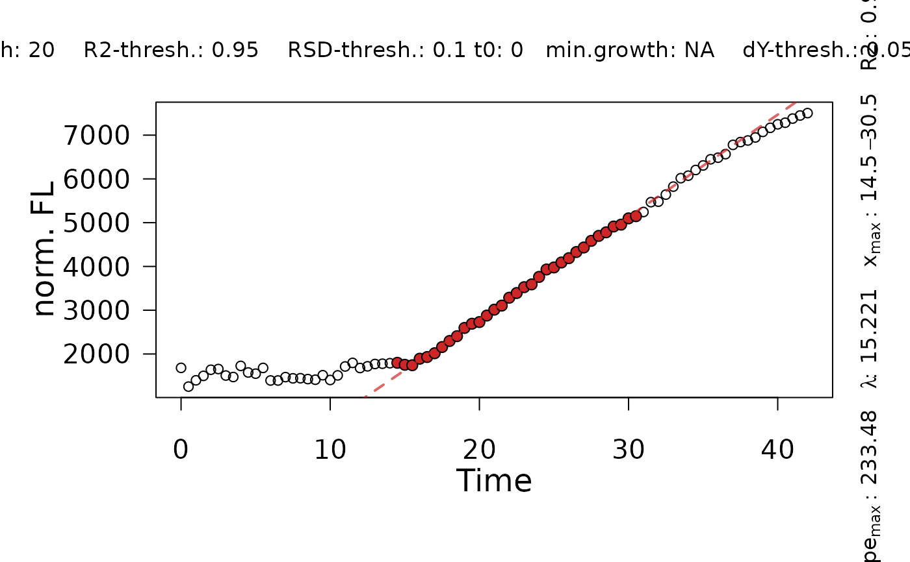

Determine maximum slopes from using a heuristic approach similar to the “growth rates made easy”-method of Hall et al. (2013).
Usage
flFitLinear(
time = NULL,
growth = NULL,
fl_data,
ID = "undefined",
quota = 0.95,
control = fl.control(x_type = c("growth", "time"), log.x.lin = FALSE, log.y.lin =
FALSE, t0 = 0, min.growth = NA, lin.h = NULL, lin.R2 = 0.98, lin.RSD = 0.05, lin.dY =
0.05, biphasic = FALSE)
)Arguments
- time
Vector of the independent time variable (if x_type = "time" in control object).
- growth
Vector of the independent time growth (if x_type = "growth" in control object).
- fl_data
Vector of the dependent fluorescence variable.
- ID
(Character) The name of the analyzed sample.
- quota
(Numeric, between 0 an 1) Define what fraction of
max_slopethe slope of regression windows adjacent to the window with highest slope should have to be included in the overall linear fit.- control
A
fl.controlobject created withfl.control, defining relevant fitting options.
Value
A gcFitLinear object with parameters of the fit. The lag time is
estimated as the intersection between the fit and the horizontal line with
\(y=y_0\), where y0 is the first value of the dependent variable.
Use plot.gcFitSpline to visualize the linear fit.
- raw.x
Filtered x values used for the spline fit.
- raw.fl
Filtered fluorescence values used for the spline fit.
- filt.x
Filtered x values.
- filt.fl
Filtered fluorescence values.
- ID
(Character) Identifies the tested sample.
- FUN
Linear function used for plotting the tangent at mumax.
- fit
lmobject; result of the final call oflmto perform the linear regression.- par
List of determined fluorescence parameters:
y0: Minimum fluorescence value considered for the heuristic linear method.dY: Difference in maximum fluorescence and minimum fluorescenceA: Maximum fluorescencey0_lm: Intersection of the linear fit with the abscissa.max_slope: Maximum slope of the linear fit.tD: Doubling time.slope.se: Standard error of the maximum slope.lag: Lag X.x.max_start: X value of the first data point within the window used for the linear regression.x.max_end: X value of the last data point within the window used for the linear regression.x.turn: For biphasic: X at the inflection point that separates two phases.max.slope2: For biphasic: Slope of the second phase.tD2: Doubling time of the second phase.y0_lm2: For biphasic: Intersection of the linear fit of the second phase with the abscissa.lag2: For biphasic: Lag time determined for the second phase..x.max2_start: For biphasic: X value of the first data point within the window used for the linear regression of the second phase.x.max2_end: For biphasic: X value of the last data point within the window used for the linear regression of the second phase.
- ndx
Index of data points used for the linear regression.
- ndx2
Index of data points used for the linear regression for the second phase.
- control
Object of class
grofit.controlcontaining list of options passed to the function ascontrol.- rsquared
R2 of the linear regression.
- rsquared2
R2 of the linear regression for the second phase.
- fitFlag
(Logical) Indicates whether linear regression was successfully performed on the data.
- fitFlag2
(Logical) Indicates whether a second phase was identified.
- reliable
(Logical) Indicates whether the performed fit is reliable (to be set manually).
References
Hall, BG., Acar, H, Nandipati, A and Barlow, M (2014) Growth Rates Made Easy. Mol. Biol. Evol. 31: 232-38, DOI: 10.1093/molbev/mst187
Petzoldt T (2022). growthrates: Estimate Growth Rates from Experimental Data. R package version 0.8.3, https://CRAN.R-project.org/package=growthrates.
Examples
# load example dataset
input <- read_data(data.growth = system.file("lac_promoters_growth.txt", package = "QurvE"),
data.fl = system.file("lac_promoters_fluorescence.txt", package = "QurvE"),
csvsep = "\t",
csvsep.fl = "\t")
#> Sample data are stored in columns. If they are stored in row format, please run read_data() with data.format = 'row'.
# Extract time and normalized fluorescence data for single sample
time <- input$time[4,]
data <- input$norm.fluorescence[4,-(1:3)] # Remove identifier columns
# Perform linear fit
TestFit <- flFitLinear(time = time,
fl_data = data,
ID = "TestFit",
control = fl.control(fit.opt = "l", x_type = "time",
lin.R2 = 0.95, lin.RSD = 0.1,
lin.h = 20))
plot(TestFit)
